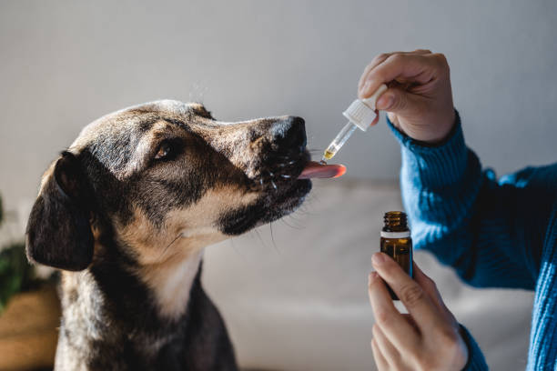

There are approximately 70 million pet dogs and 74.1 million pet cats in the U.S. where 20 men and women are assaulted per minute (an average of around 10 million a year).
In one survey, 71 percent of domestic violence victims reported that their abuser also targeted pets.

The shocking number of animal cruelty cases reported every day is just the tip of the iceberg—most cases are never reported. Unlike violent crimes against people, cases of animal abuse are not compiled by state or federal agencies, making it difficult to calculate just how common they are. However, we can use the information that is available to try to understand and prevent cases of abuse.
Who abuses animals?
Cruelty and neglect cross all social and economic boundaries and media reports suggest that animal abuse is common in both rural and urban areas.
Intentional cruelty to animals is strongly correlated with other crimes, including violence against people.
Hoarding behavior often victimizes animals. Sufferers of a hoarding disorder may impose severe neglect on animals by housing far more than they are able to adequately take care of. Serious animal neglect (such as hoarding) is often an indicator of people in need of social or mental health services.
Surveys suggest that those who intentionally abuse animals are predominantly men under 30, while those involved in animal hoarding are more likely to be women over 60.
The HSUS documented uniformed police officers at a cockfighting pit in Kentucky.
The U.S. Drug Enforcement Agency has prosecuted multiple cases where drug cartels were running narcotics through cockfighting and dogfighting operations.
Dozens of homicides have occurred at cockfights and dogfights.
The HSUS documented uniformed police officers at a cockfighting pit in Kentucky.
The U.S. Drug Enforcement Agency has prosecuted multiple cases where drug cartels were running narcotics through cockfighting and dogfighting operations.
Dozens of homicides have occurred at cockfights and dogfights.